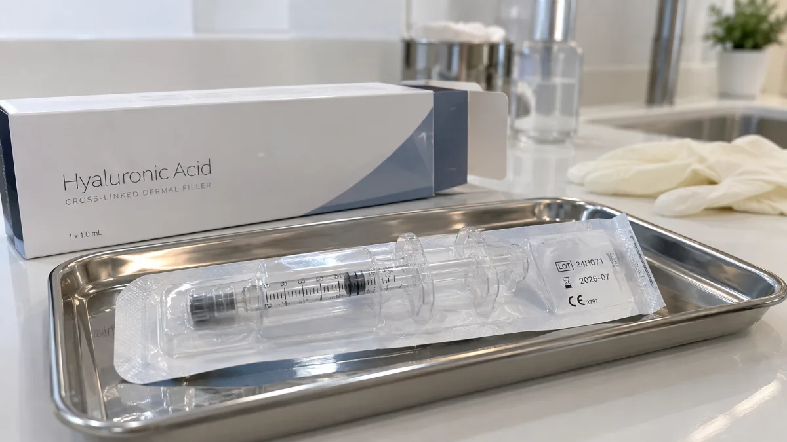
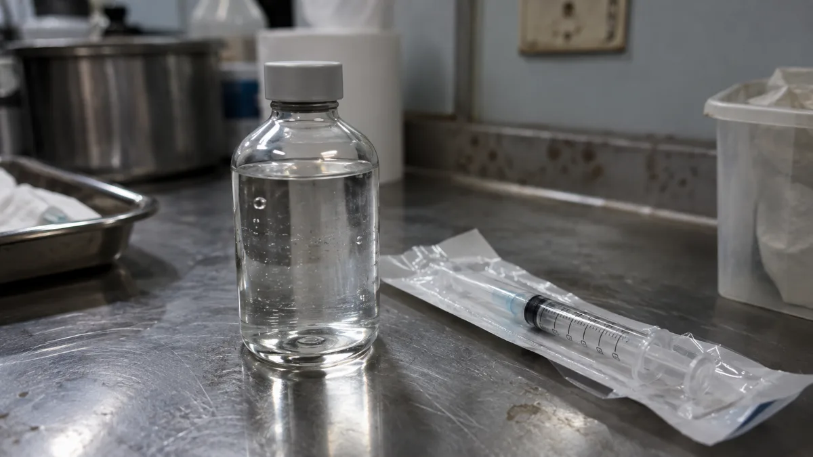
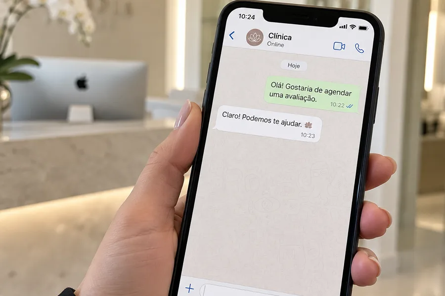
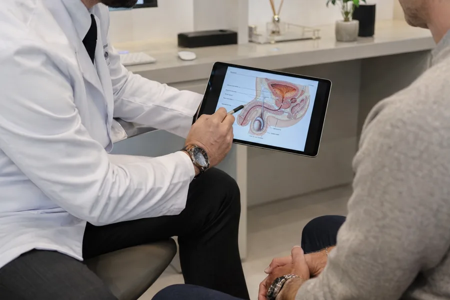
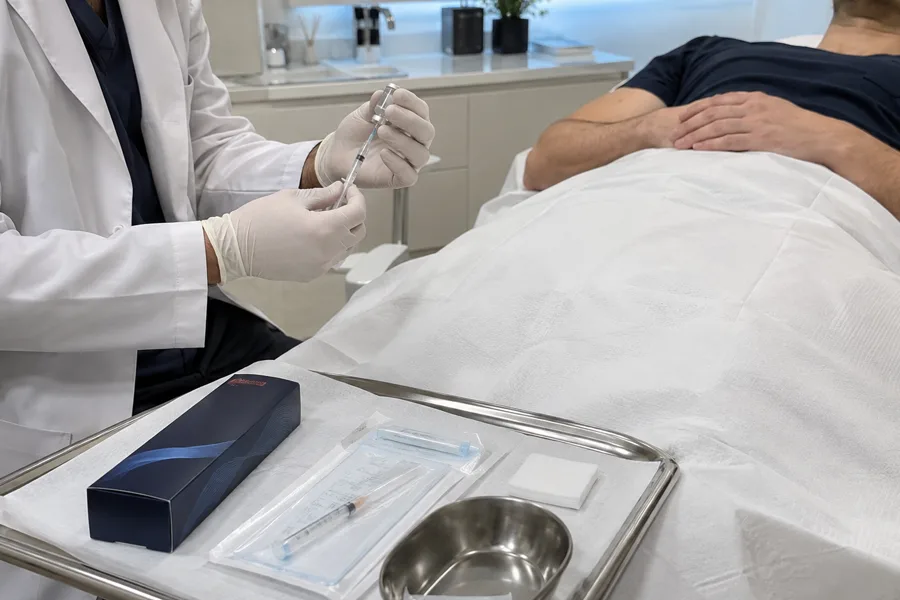
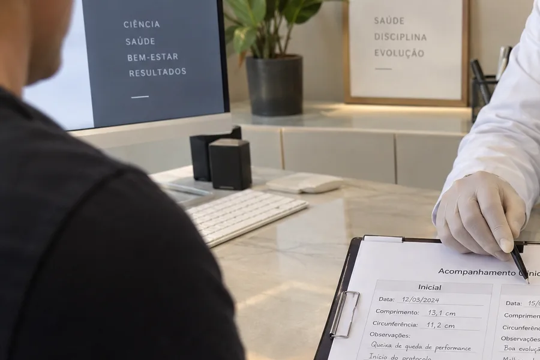

Anestesia local
Conforto total durante todo o procedimento, em consultório.
Ácido hialurônico — o mesmo material padrão-ouro da harmonização facial —, aplicado com microcânula por urologista. Sem cirurgia, sem cortes, e com uma vantagem que o silicone e o PMMA não têm: é reversível.

Muitos homens se arrependem não de terem feito, mas de terem feito com o material errado, na mão errada. Aqui, a conversa começa pela sua segurança.
A microcânula tem ponta romba: em vez de “furar”, ela desliza entre os tecidos e distribui o produto de forma homogênea, preservando vasos e nervos — e a sensibilidade.
Conforto total durante todo o procedimento, em consultório.
Ponta romba distribui o ácido hialurônico preservando a sensibilidade.
O ganho de espessura é visível na hora, sem afastar você da rotina.
A diferença de preço quase sempre é a diferença de material. E material, aqui, é a diferença entre reversível e permanente.


Ácido hialurônicoPadrão-ouro mundial, biocompatível
Silicone / PMMAPermanente — não sai depois de aplicado
Ácido hialurônicoReversível com a enzima hialuronidase
Silicone / PMMARisco de nódulos, migração e infecção
Ácido hialurônicoAbsorvido naturalmente pelo corpo
Silicone / PMMACostuma estar por trás do “preço bom demais”
Ácido hialurônicoBaixo risco quando bem indicado e aplicado por especialista
Silicone / PMMAComplicações que podem exigir cirurgia para corrigir
Se o valor parece bom demais, pergunte qual é o material. Reversibilidade é segurança — e é o que você não recupera depois.
O preenchimento aumenta a espessura (calibre), não o comprimento. O efeito dura em média de 12 a 24 meses e precisa de manutenção — porque o produto é reabsorvido. Isso é o que o torna seguro e reversível, não uma limitação.
Como todo procedimento, existem riscos, avaliados caso a caso na consulta. Nem todo mundo é candidato — e ser honesto sobre isso faz parte de fazer bem feito. O ambiente, a técnica e o produto certificado reduzem o risco ao mínimo.
Com discrição, do primeiro contato ao acompanhamento.

Você fala com a equipe pelo WhatsApp.

Consulta para entender seu caso e alinhar expectativas.

Aplicação em consultório, com produto certificado.

Acompanhamento para avaliar o resultado.

Dr. Eduardo Miranda
CRM-[UF] [número] · RQE [número] — Urologia
Urologista com formação específica em harmonização íntima masculina, dedicado a procedimentos minimamente invasivos com ácido hialurônico e uso exclusivo de produtos certificados.
Cada caso tem um ponto de partida e um resultado possível diferente. Por isso os registros de resultado não são exibidos aqui: eles são mostrados e discutidos na consulta, com o seu caso na frente, sem promessa e sem comparação com o de ninguém.
As dúvidas mais comuns sobre segurança e resultado.
Sim. Por ser ácido hialurônico, o produto pode ser dissolvido com a enzima hialuronidase. É a grande vantagem de segurança frente a materiais permanentes como PMMA e silicone.
Quase sempre a diferença está no material. Ácido hialurônico de boa procedência tem custo — e é ele que garante a reversibilidade. Valor muito abaixo do mercado costuma significar outro produto. Pergunte sempre qual é o material.
Com anestesia local, o desconforto é mínimo. A microcânula de ponta romba reduz o trauma em comparação à agulha comum.
Quando bem indicado e bem aplicado, não. O produto é depositado em plano superficial, sem interferir nas estruturas responsáveis pela ereção e pela sensibilidade.
É um produto absorvível, então o efeito é temporário — em média de 12 a 24 meses, variando conforme o organismo e o volume aplicado. A necessidade de manutenção é avaliada no retorno.
Sim. O procedimento não envolve a uretra em nenhuma etapa.
Fale com nossa equipe pelo WhatsApp e agende sua avaliação. Tire todas as suas dúvidas antes de qualquer decisão.